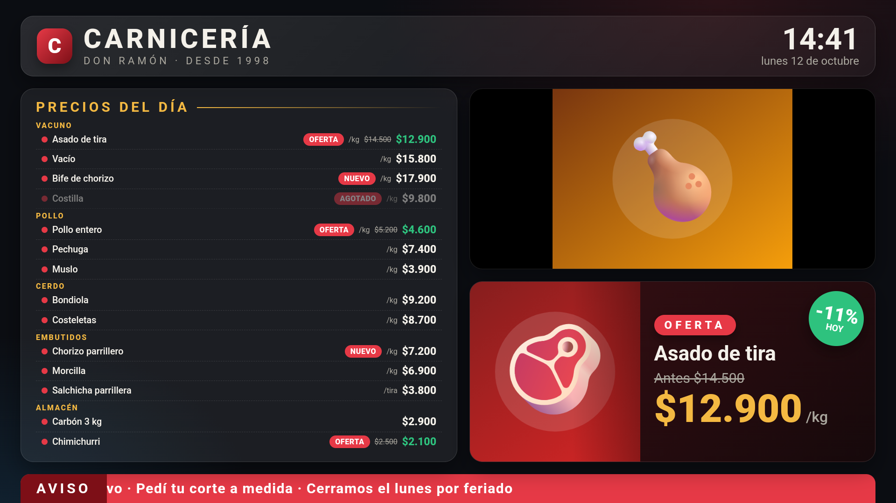
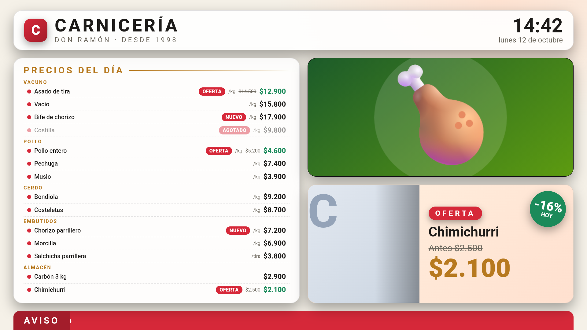

Cartelería digital para cualquier negocio: carnicería, verdulería, ferretería, panadería, gastronomía y más.
Panel de gestión: https://carteleriaq.soporteq.tech
Descarga de la app para TV: https://carteleriaq.soporteq.tech/download/carteleriaq.apk
Índice
1. Cómo funciona el sistema
2. Primeros pasos (resumen de 10 minutos)
3. Instalar y vincular una TV
4. Catálogo de artículos
5. Importar artículos desde Excel/CSV
6. Listas de pantalla
7. Medios y promociones
8. Ajuste de precios
9. Ciclos y escenas
10. La cartelera completa
11. Ofertas
12. Pantallas: asignar y configurar
13. Qué pasa sin internet y cómo se actualiza
14. Ejemplo completo: una carnicería
15. Para el administrador
16. Problemas frecuentes
17. Límites y datos útiles
1. Cómo funciona el sistema
CarteleriaQ tiene tres partes que trabajan juntas:
Parte
Qué es
Panel de gestión
La página web donde cargás los artículos, las fotos y armás qué se muestra. Se entra con usuario y contraseña desde cualquier computadora o celular.
Servidor en la nube
Guarda todo. No hay que instalar nada en el local: las TVs se conectan a internet y se actualizan solas.
Reproductor en la TV
La app que muestra la cartelería. Funciona en Android TV / Google TV / Fire TV (APK), en Windows y en navegadores.
Las piezas que vas a usar
Pieza
Para qué sirve
Catálogo de artículos
Es tu inventario base: cada artículo con precio, unidad (kg, unidad…), categoría, foto, etiqueta y stock. Es la fuente de verdad de los precios.
Lista de pantalla
Una selección de artículos del catálogo para mostrar (por ejemplo "Precios del día"). Si cambiás un precio en el catálogo, todas las listas y pantallas se actualizan solas.
Medios
Tus imágenes y videos de promoción.
Escena
Una "diapositiva" de la pantalla: una lista de precios, las ofertas, una imagen o video, un anuncio de texto, o la cartelera completa.
Ciclo
Un conjunto de escenas que rotan una tras otra, cada una con su duración. Un ciclo se puede asignar a varias pantallas a la vez.
Pantalla
Cada TV vinculada. Tiene asignado un ciclo.
La idea central
Los datos se cargan una sola vez (catálogo y medios) y se combinan en listas, escenas y ciclos. Cambiás algo en un lugar y todas las TVs lo reflejan en pocos segundos.
Quién hace qué
Administrador (quien vende el servicio): crea los negocios, les da usuario y contraseña y fija sus límites (cantidad de pantallas y espacio de archivos).
Negocio: tiene un usuario. Solo ve y edita sus propios datos. Arma su catálogo, sus listas, sus ciclos y vincula sus TVs.
2. Primeros pasos (resumen de 10 minutos)
Si recién empezás, este es el camino más corto para ver algo en la TV:
Entrá al panel con el usuario y contraseña que te dio el administrador.
Cargá tus artículos: en Catálogo de Artículos, uno por uno o importando un archivo de Excel/CSV (capítulo 5).
Creá una lista en Listas de Pantalla y agregale artículos "Del catálogo".
Subí fotos o videos de promoción en Medios & Promociones (opcional).
Instalá la app en la TV y anotá el código de 6 caracteres que muestra (capítulo 3).
Vinculá la TV en Pantallas con ese código.
Creá un ciclo en Ciclos (por ejemplo "Cartelera completa") y asignalo a la pantalla.
En unos segundos la TV muestra el contenido. A partir de ahí, los cambios de precios, fotos o stock llegan solos.
El panel por dentro
Menú
Qué hacés ahí
Inicio
Resumen y accesos rápidos.
Pantallas
Vincular TVs, asignarles un ciclo, elegir transición, ver la versión del reproductor.
Medios & Promociones
Subir y borrar imágenes y videos.
Catálogo de Artículos
Tu inventario: alta, edición, foto, stock, importación por CSV.
Ajuste de precios
Subir o bajar precios en masa, ahora o programado, con historial y deshacer.
Listas de Pantalla
Armar las listas que se muestran.
Ciclos
Armar las secuencias de escenas.
Mi cuenta
Cambiar tu contraseña.
En la barra lateral ves cuántas pantallas y cuánto espacio llevás usados de tu plan.
3. Instalar y vincular una TV
Instalar la app (Android TV / Google TV / Fire TV)
En la TV, instalá la app gratuita Downloader desde la tienda.
Abrila y escribí la dirección de descarga: https://carteleriaq.soporteq.tech/download/carteleriaq.apk
Al terminar la descarga, Android pide permitir "instalar apps desconocidas" para Downloader. Aceptá (se hace una sola vez) e instalá.
Abrí CarteleriaQ. La TV muestra un código de 6 caracteres (por ejemplo A1B2C3).
Otras formas de instalar
Con un pendrive USB (copiá el archivo .apk y abrilo desde un explorador de archivos de la TV) o por cable con adb install -r carteleriaq.apk. En una PC con Windows también hay una versión de escritorio y se puede abrir el reproductor web en https://carteleriaq.soporteq.tech/player.
Vincular la TV con el panel
En el panel, entrá a Pantallas.
En "Vincular Pantalla" completá: Código de la TV (el que ves en el televisor), Nombre identificador (por ejemplo "TV Mostrador") y, si querés, la Ubicación.
Tocá Vincular Pantalla. La TV pasa a estado en línea y muestra la espera hasta que le asignes un ciclo.
Importante
Cada negocio puede vincular hasta su máximo de pantallas (lo fija el administrador). Si se borra una pantalla del panel, esa TV vuelve a pedir un código nuevo.
Funciona en cualquier TV
El reproductor se adapta solo al tamaño: se ve igual en HD, Full HD y 4K.
4. Catálogo de artículos
El catálogo es la base de todo. Cada artículo tiene:
Dato
Detalle
Nombre y descripción
Como se verá en la TV.
Precio
El precio vigente.
Unidad de venta
kg, 100 g, unidad, litro, docena… Se muestra junto al precio ("$12.900 / kg"). Si es "unidad" no se muestra.
Categoría
Sección libre (Vacuno, Pollo, Lácteos…). Sirve para agrupar en pantalla, filtrar escenas y ajustar precios.
Precio anterior
Si es mayor al actual, se muestra tachado y el artículo cuenta como oferta con su descuento calculado.
Etiqueta
Un cartelito (OFERTA, NUEVO…, hasta 24 caracteres).
Stock
Disponible o no. Sin stock se ve atenuado como AGOTADO (o se oculta, según la lista).
Foto
Se elige entre tus imágenes subidas. Sin foto, la pantalla muestra la inicial del nombre.
Código interno / de barras
Tu código propio, único dentro de tu negocio. Permite actualizar artículos por importación.
Cargar y editar
Uno por uno: botón de nuevo artículo en Catálogo de Artículos.
Editar: cambiás precio, foto, stock o etiqueta. Se actualiza en todas las pantallas que lo muestran.
Marcar sin stock: apagás la disponibilidad y el artículo se atenúa o desaparece de la TV sin tocar listas.
Ofertas: cargá un precio anterior mayor al precio (o la etiqueta OFERTA) y el artículo entra solo en las escenas de ofertas automáticas.
5. Importar artículos desde Excel/CSV
Para cargar muchos artículos de golpe: Catálogo de Artículos → Importar Artículos desde CSV. En Excel, guardá como CSV UTF-8. Se aceptan separadores coma, punto y coma o tabulador, y se detecta solo.
Columna
Obligatoria
Ejemplo / detalle
nombre
Sí
Asado de tira
precio
Sí
12900 · 12.900,50 · $ 12.900 (todos se entienden)
codigo_interno
Recomendada
V01. Si ya existe, el artículo se actualiza; si no, se crea.
codigo_barra
No
7791813421007
descripcion
No
Corte tradicional
categoria
No
Vacuno
unidad
No
kg, 100 g, litro…
precio_anterior
No
14500 (se muestra tachado)
etiqueta
No
OFERTA, NUEVO
disponible
No
si / no
La primera fila es el encabezado y el orden de las columnas no importa. Mayúsculas y tildes se toleran (Nombre, PRECIO, Código Interno).
codigo_interno;nombre;categoria;unidad;precio;precio_anterior;etiqueta
V01;Asado de tira;Vacuno;kg;12900;14500;OFERTA
V02;Vacío;Vacuno;kg;15800;;
P01;Pollo entero;Pollo;kg;4600;5200;OFERTA
Cosas útiles
Las columnas que no incluís no se tocan: un archivo con solo codigo_interno,nombre,precio actualiza precios sin borrar categoría, unidad ni etiqueta.
Sin codigo_interno ni codigo_barra, cada importación crea el artículo de nuevo (duplicados). Conviene siempre ponerlo.
Al terminar, el panel muestra cuántos fueron nuevos, cuántos actualizados y qué filas se rechazaron y por qué (el número de fila es el de Excel).
La foto no se importa por archivo: se elige después, artículo por artículo.
Tamaño máximo del archivo: 5 MB. Hay archivos de ejemplo en la carpeta docs del proyecto.
6. Listas de pantalla
Una lista es una selección de artículos para mostrar. Se arma en Listas de Pantalla.
Creá una lista nueva con un nombre (por ejemplo "Precios del día").
+ Del catálogo: elegí artículos con búsqueda y selección múltiple. Quedan enlazados: muestran siempre el precio, foto y stock actuales del catálogo.
+ Manual (opcional): un artículo con precio propio, independiente del catálogo. No se actualiza solo.
Ordenalos como quieras.
Opciones de la lista
Agrupar por categoría: la pantalla muestra un título por cada categoría.
Ocultar los sin stock: si está apagado, los agotados se ven atenuados con la etiqueta AGOTADO.
Estilos de visualización
Estilo
Cuándo conviene
Lista
Nombre, etiqueta, precio y unidad. La más compacta, ideal para listas largas.
Lista con fotos
Una fila por artículo con miniatura, nombre, descripción y precio.
Tarjetas con fotos
Grilla con foto grande. Las columnas se adaptan a la cantidad de artículos.
Si la lista no entra en el alto de la pantalla, el reproductor achica la letra (hasta 70 %) y, si todavía no entra, la desplaza sola de arriba hacia abajo.
7. Medios y promociones
En Medios & Promociones subís imágenes y videos (promociones, fotos del local, fotos de productos).
Elegí el archivo; aparece en la galería de medios subidos.
Para borrar, usá el botón de la galería. Al borrar un archivo, se quitan solo las escenas que lo usaban y los artículos que lo tenían de foto quedan sin foto (no se rompe nada).
Cada negocio tiene un espacio de almacenamiento limitado (en la barra lateral ves cuánto usaste). Si se llena, no se pueden subir más archivos hasta borrar alguno.
Recomendaciones
Imágenes horizontales (16:9) de buena calidad. Para videos, mejor en formato MP4 y livianos: ocupan espacio y se guardan en la TV para verse sin internet.
8. Ajuste de precios
Para subir o bajar muchos precios a la vez: Ajuste de precios. Siempre hay vista previa antes de aplicar.
Qué cambio: Subir o Bajar, un valor y si es porcentaje o monto fijo. Opcionalmente un redondeo a múltiplos de $1, 5, 10, 50, 100, 500 o 1000 (al más cercano, hacia arriba o hacia abajo).
A qué artículos: todo el catálogo, solo algunas categorías (incluida "sin categoría") o artículos elegidos uno por uno.
Cuándo: ahora o programado para una fecha y hora (hasta un año). El servidor lo aplica solo a esa hora, aunque no tengas el panel abierto.
Ejemplos: "+8 % a la categoría Vacuno, redondeado hacia arriba a $100", "−10 % a todo el catálogo el sábado a las 8:00", "+$200 a 5 artículos elegidos".
Seguridad
El porcentaje va de −90 % a +1000 %. Ningún precio baja de $0.
El precio anterior (tachado) no se modifica con el ajuste. Si el nuevo precio supera al anterior, deja de mostrarse tachado.
Un cambio programado se puede cancelar mientras no se haya aplicado (hasta 50 programados a la vez).
Es atómico: se aplican todos los precios o ninguno.
Historial y deshacer
Cada ajuste queda registrado con el detalle (artículo, precio antes y después). Deshacer restaura los precios anteriores, pero solo de los artículos que siguen con el precio que puso ese ajuste: si alguien editó uno después, no se pisa su trabajo (el resumen indica cuántos se restauraron y cuántos se omitieron). Un ajuste se puede deshacer una sola vez.
9. Ciclos y escenas
Un ciclo es una secuencia de escenas que rotan en la pantalla. Se arman en Ciclos.
Ciclos reutilizables
Armás el ciclo una vez (por ejemplo "Ciclo carnicería") y lo asignás a todas las pantallas que quieras. Si lo cambiás, todas se actualizan.
La Configuración rápida de una pantalla (en Pantallas) crea un ciclo propio solo para esa TV, sin tocar los compartidos.
Podés duplicar un ciclo para hacer una variante y eliminar los que no uses (las pantallas que lo usaban muestran el fondo de espera).
Crear un ciclo
En Ciclos, escribí un nombre y elegí con qué empezar: Cartelera completa, Precios + ofertas, Solo precios, Precios + ofertas + promos o Vacío.
Se abre el editor: ves la línea de tiempo con todas las escenas y la duración total del ciclo.
Agregá escenas con los botones de abajo ("Agregar escena").
Reordenalas con ▲▼, cambiá su duración, activalas o desactivalas, editá, duplicá o quitá.
Tocá Guardar cambios. Las TVs se actualizan solas.
Estado en vivo
Junto a cada escena el editor te dice qué mostraría hoy ("Se muestra hoy · 14 artículos", "Hoy no hay ofertas: esta escena se omite"). Las escenas vacías no se muestran en la TV.
Tipos de escena
Tipo
Qué muestra y cómo se configura
💲 Precios
Una lista de precios. Elegís la lista, el estilo (lista / lista con fotos / tarjetas), filtrar por categorías (útil para repartir una lista larga en varias escenas) y promos al costado (imágenes que rotan junto a la lista).
🔥 Ofertas
Los artículos en oferta, en diseño destacada (uno a la vez, a pantalla grande) o grilla. Ver capítulo 11.
🖼️ Imagen / video
Uno o varios archivos de la biblioteca a pantalla completa. Si elegís varios al crear, se genera una escena por cada uno. Los videos se repiten durante la duración de la escena.
📝 Anuncio
Un texto grande con subtítulo opcional y 6 colores (rojo, azul, verde, naranja, violeta, oscuro). Ideal para avisos: "Hoy 15 % pagando en efectivo".
📺 Cartelera completa
Cabecera, lista, fotos/video, ofertas y avisos en una sola pantalla. Ver capítulo 10.
Cada escena tiene su duración (de 3 a 600 segundos) y se puede desactivar sin borrarla (por ejemplo, una escena de feriado).
10. La cartelera completa
Una escena que arma toda la pantalla, pensada para locales donde se quiere ver todo a la vez.

Cartelera completa con el estilo oscuro (captura de la TV).
Zona
Qué muestra
Cabecera
Logo con la inicial, nombre del negocio (o el título que elijas), subtítulo y fecha y hora en vivo.
Lista de precios (izquierda)
Con categorías, etiquetas, precio anterior tachado y precios en oferta en verde. Si es larga se achica o se desplaza sola.
Fotos o video (arriba derecha)
Las imágenes o videos que elijas, que rotan solos.
Oferta destacada (abajo derecha)
Rota entre las ofertas con foto, precio anterior, precio nuevo y un círculo con el descuento.
Franja de avisos (abajo)
Mensajes que se desplazan, hasta 10.
Cómo configurarla
En Ciclos, creá un ciclo con "Empezar con: Cartelera completa" (o agregá la escena a uno existente).
Editá la escena y elegí la lista de precios (y, si querés, solo algunas categorías).
Completá título (vacío = nombre del negocio) y subtítulo, y decidí si se muestra la fecha y hora.
Elegí el estilo: oscuro, vino, azul, verde o claro.
Marcá las fotos o videos de la derecha (si no elegís ninguno, el espacio queda para las ofertas).
Activá o no las ofertas destacadas: automáticas (con un máximo) o artículos elegidos y ordenados por vos.
Escribí los avisos de la franja inferior, uno por línea (vacío = sin franja).

La misma cartelera con el estilo claro.
Se adapta sola
Si no hay fotos elegidas o hoy no hay ofertas, ese recuadro se oculta y el resto ocupa el espacio. Una cartelera completa se puede dejar sola en un ciclo (se queda fija) o combinar con otras escenas.
11. Ofertas
Una oferta es un artículo cuyo precio anterior es mayor al precio actual o que lleva la etiqueta OFERTA o PROMO. El descuento (-NN %) se calcula solo.
Cómo crear una oferta
En Catálogo de Artículos, editá el artículo.
Cargá el precio anterior (el de antes) y poné el precio nuevo más bajo. O ponele la etiqueta OFERTA.
Listo: entra solo en las escenas de ofertas automáticas. Para terminar la oferta, sacá el precio anterior o la etiqueta.
Dos diseños
Diseño
Descripción
Destacada
Una oferta a la vez a pantalla grande, con foto, precio anterior tachado, precio gigante y círculo de descuento. Cada oferta se muestra entre 4 y 12 segundos, repartiendo la duración de la escena.
Grilla
Varias ofertas juntas en tarjetas con el descuento.
Automáticas o elegidas
Automáticas: todas las ofertas vigentes, ordenadas por mayor descuento. Podés limitar el máximo y filtrar por categorías. Se actualizan solas cuando cambia el catálogo.
Elegir artículos: vos marcás cuáles y en qué orden. Los artículos sin stock se omiten.
Ojo
Si hoy no hay ofertas, una escena de ofertas automática se omite en la TV (no muestra una pantalla vacía). El editor te avisa "Hoy no hay ofertas".
12. Pantallas: asignar y configurar
En Pantallas aparece una tarjeta por cada TV vinculada, con su estado, ubicación y versión del reproductor.
Asignar un ciclo
En la tarjeta de la pantalla, elegí el Ciclo de contenido. Se guarda al instante y la TV lo recibe en segundos.
Verás un resumen (cantidad de escenas y duración total) y el enlace Editar ciclo, que te lleva directo al editor.
Podés quitar el ciclo: la TV muestra el fondo de espera.
Transición
Cómo cambia de una escena a otra (y entre las imágenes de un carrusel): fundido, deslizar o acercamiento.
Configuración rápida
El botón Configuración rápida sirve para casos simples: elegís una lista de precios, el estilo y las promos, y el sistema crea un ciclo propio para esa TV. No modifica los ciclos compartidos.
Eliminar una pantalla
Libera un lugar de tu plan. La TV vuelve a pedir código de vinculación. Si tenía un ciclo propio (configuración rápida), se borra junto con ella; los ciclos compartidos se mantienen.
13. Qué pasa sin internet y cómo se actualiza
Sin conexión
La TV guarda la última configuración y todos los medios (imágenes, videos y fotos de los artículos) en el dispositivo.
Si se corta internet, sigue reproduciendo el ciclo con lo último que recibió.
Cuando vuelve la conexión, se pone al día sola. No hay que hacer nada.
Cuándo se ven los cambios
Cambio
Cuándo llega a la TV
Precios, fotos, stock, ofertas, ciclos
En pocos segundos.
Ajuste programado de precios
A la hora programada, aunque el panel esté cerrado.
Mejoras del reproductor (diseño, funciones nuevas)
Por aire (OTA), como máximo en 10 minutos. No hay que reinstalar el APK.
Actualizaciones seguras
El reproductor verifica cada actualización antes de usarla. Si una versión nueva falla al arrancar dos veces seguidas, la TV vuelve sola a la versión anterior que funcionaba. En Pantallas ves qué versión tiene cada TV.
14. Ejemplo completo: una carnicería
Un recorrido real de punta a punta para "Carnicería Don Ramón", con una TV en el mostrador.
Catálogo: importás un CSV con 14 cortes (asado, vacío, bife, pollo, cerdo, embutidos, almacén), con categoría, unidad "kg" y precio.
Fotos: subís 8 fotos en Medios y las asignás a los cortes principales.
Lista: creás "Precios del día" y agregás todo el catálogo "Del catálogo", con agrupar por categoría.
Ofertas: al asado le cargás precio anterior $14.500 y precio $12.900; al pollo, $5.200 y $4.600.
Ciclo: creás "Cartelera completa" con estilo oscuro, título "Carnicería", subtítulo "Don Ramón · desde 1998", las fotos a la derecha, ofertas automáticas y tres avisos ("Hoy 15 % pagando en efectivo", "Pedí tu corte a medida", "Cerramos el lunes por feriado").
Pantalla: vinculás la TV como "Mostrador" y le asignás el ciclo.
Día a día: el sábado subís el vacío con Ajuste de precios (+5 %, redondeado a $100), programado para las 8:00. Para el feriado agregás un anuncio al ciclo; lo desactivás el martes.
Variante con varias escenas
Si preferís rotar: una escena de Precios de "Vacuno" (30 s), otra de "Pollo y cerdo" (20 s), Ofertas destacadas (15 s), una Imagen del local (8 s) y un Anuncio (8 s). El editor muestra la duración total del ciclo.
Para otros rubros es igual: solo cambian las categorías y las unidades (ferretería: "unidad", "metro"; verdulería: "kg", "atado"; panadería: "docena", "unidad").
15. Para el administrador
El administrador entra con su usuario y ve el menú Negocios. Es quien da de alta a cada cliente.
Crear un negocio
En Negocios → Nuevo negocio completá: nombre del negocio, usuario, contraseña (mínimo 8 caracteres; el botón Generar crea una segura), máximo de pantallas y almacenamiento (MB).
Crealo y pasale al cliente la dirección del panel, su usuario y su contraseña.
Cada negocio tiene un solo usuario y ve únicamente sus propios datos.
Gestionar negocios
Editar: cambiar nombre, máximo de pantallas, espacio o poner una contraseña nueva.
Suspender / Reactivar: un negocio suspendido no puede entrar al panel.
Eliminar: borra el negocio y todos sus archivos. No se puede deshacer.
Seguridad y mantenimiento
Cambiá la contraseña del administrador desde Mi cuenta y no la compartas.
Respaldos: el servidor incluye un script de respaldo (base de datos + archivos). Conviene programarlo todos los días y copiar los respaldos a otro lugar, porque si el servidor se pierde, se pierden con él.
Actualizar el sistema: se despliega desde el proyecto con un script que reconstruye el servidor y publica los archivos nuevos del reproductor. Las TVs lo reciben por aire.
Nueva versión del APK: solo hace falta cuando cambia el cargador de la app (poco frecuente). Se publica en la carpeta de descargas y los demás cambios llegan por OTA.
Antes de cualquier cambio grande
Hacé un respaldo de la base de datos. Cada ajuste de precios, además, queda en el historial y se puede deshacer desde el panel.
16. Problemas frecuentes
Síntoma
Qué revisar
La TV muestra un código y no avanza
Ingresá ese código en Pantallas → Vincular Pantalla. Si el límite de pantallas de tu plan está completo, borrá una o pedí ampliarlo.
La TV muestra "Esperando contenido…"
La pantalla no tiene ciclo asignado, o el ciclo no tiene escenas con contenido hoy. Asignale un ciclo en Pantallas.
Un cambio de precio no aparece
Verificá que la TV tenga internet. Si la lista usa un artículo manual, no se actualiza con el catálogo. Esperá unos segundos.
No aparecen las ofertas
El artículo necesita precio anterior mayor al precio, o la etiqueta OFERTA/PROMO, y estar disponible (con stock). Revisá el estado en vivo del editor del ciclo.
Un artículo sale como AGOTADO
Tiene el stock apagado en el catálogo. Volvé a marcarlo disponible.
Un artículo no tiene foto
Se muestra su inicial. Elegí la foto en Catálogo de Artículos → Editar.
La importación rechaza filas
El resumen indica la fila y el motivo (falta el nombre o el precio no es un número). Corregí y volvé a importar el archivo: con códigos internos no duplica.
No puedo subir más archivos
Se llenó tu espacio. Borrá medios que no uses (barra lateral: "Espacio").
Una lista larga se ve muy chica
Dividila: en el ciclo, usá varias escenas de Precios filtradas por categoría.
Un video no se ve en la TV
Probá con MP4 más liviano. Los videos viejos o muy pesados pueden no reproducirse en TVs antiguas.
Me equivoqué en un ajuste de precios
Ajuste de precios → Historial → Deshacer (solo restaura los artículos que no se editaron después).
No puedo entrar al panel
Revisá usuario y contraseña. Si la olvidaste, pedile al administrador que te ponga una nueva.
17. Límites y datos útiles
Concepto
Valor
Duración de una escena
3 a 600 segundos
Escenas por ciclo
hasta 30
Ciclos por negocio
hasta 100
Avisos de la franja de la cartelera completa
hasta 10
Ofertas en la cartelera completa
hasta 12 (por defecto 6)
Ofertas en escenas de ofertas
hasta 24 (por defecto 8)
Etiqueta de un artículo
hasta 24 caracteres
Archivo de importación CSV
hasta 5 MB
Ajustes de precio programados a la vez
hasta 50 (hasta un año de anticipación)
Porcentaje de ajuste de precios
de −90 % a +1000 %
Pantallas y espacio de archivos
Los fija el administrador para cada negocio
Contraseña
mínimo 8 caracteres
Direcciones
Panel de gestión: https://carteleriaq.soporteq.tech
Descarga de la app para TV: https://carteleriaq.soporteq.tech/download/carteleriaq.apk
Reproductor en el navegador: https://carteleriaq.soporteq.tech/player
Consejos finales
Mantené el catálogo ordenado con códigos internos y categorías: es lo que hace todo lo demás fácil.
Usá listas enlazadas al catálogo, así un cambio de precio se hace una sola vez.
Armá ciclos reutilizables y asignalos a varias TVs en lugar de configurar cada una.
Usá el ajuste programado para los aumentos fuera de horario.
Revisá el estado en vivo del editor de ciclos antes de dar un ciclo por terminado.